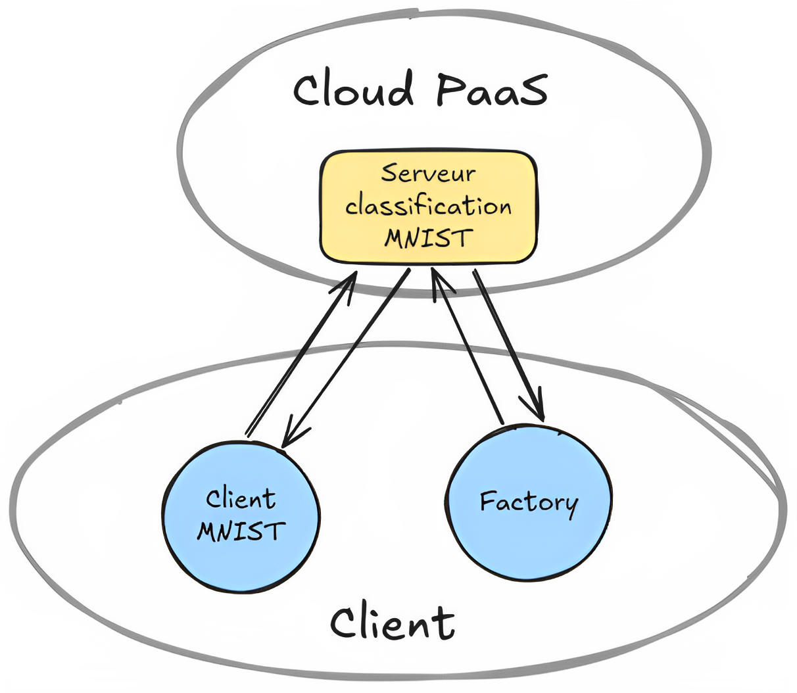
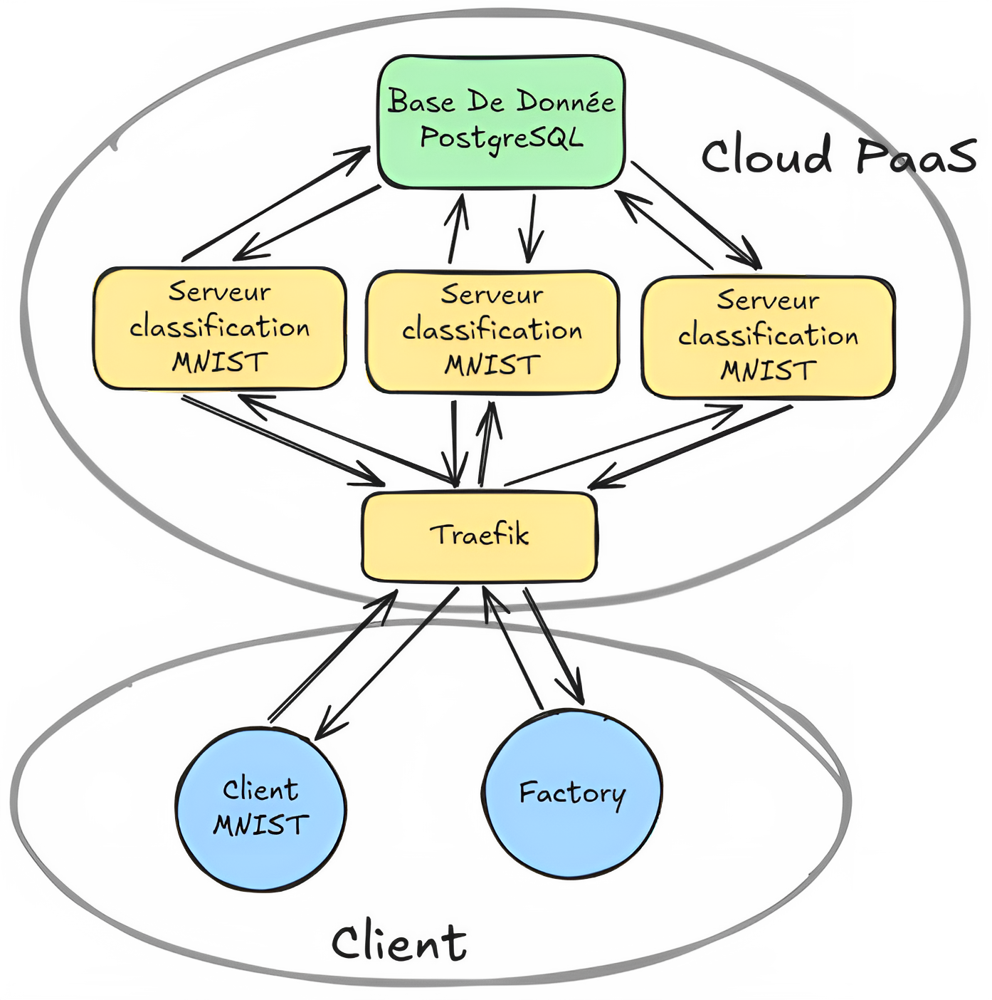

Self-Hosted Cloud Implementation
Hugo Claveille
Supervisor: Gilles MENEZ
Master 1 Computer Science - DS4H Project
May 2026
Plan
- Introduction
- State of the art & solution selection
- Infrastructure & deployment
- Scaling experiments
- Discussion & conclusion
Introduction
Free tier — Cold start
Service asleep
First response
Goal: build a self-hosted alternative
that we fully control
- Abstraction of infrastructure
- Application isolation
- Multi-user support
- Scalability
- Orchestration
State of the Art: Abstraction & Remote Access
- Abstraction of computing resources is not a new idea
- 1960s — "computer utility": computing power as a service (Multics)
- 1940s — remote access to computing resources (George Stibitz, 1940)
[ Image : Multics — système d'exploitation années 1960, concept "computer utility" ]
[ Frise chronologique : 1940 accès distant → 1960s Multics → 1990s SaaS → 2000s Cloud ]
State of the Art: Cloud Models & Containerization
Service models
- IaaS — raw infrastructure
- PaaS — deployment platform
- SaaS — full application
Deployment types
- Public / Private / Hybrid
Key enabling technology
- Containers — lightweight isolation, shared kernel, portable
- Docker — standard container runtime
- Git push → build → deploy (DevOps / IaC)
Our Needs
- Web UI — students are not sysadmins
- Git integration — push to deploy
- Multi-user — isolate projects per student
- Low resource footprint — single constrained machine
- Monitoring & logging — track usage and troubleshoot
- Easy to maintain — one person, one machine
Infrastructure & Constraints
Single VPS — Debian 12
- No automatic elasticity
- Manual upgrade only
[ Image : Schéma de l'infrastructure VPS — Debian 12, Docker, Dokploy ]
Solutions Comparison
| Solution |
Web UI |
Multi-user |
Git deploy |
Resources |
| OpenStack |
✓ |
✓ |
~ |
Heavy |
| k3s |
~ |
~ |
~ |
Medium |
| Dokku |
✗ |
Limited |
✓ |
Low |
| CapRover |
✓ |
Limited |
✓ |
Low |
| Coolify |
✓ |
✓ |
✓ |
+20 GB |
| Dokploy |
✓ |
✓ |
✓ |
Low |
Deploying the Test App
RNN server — MNIST digit classifier exposed as a REST API
POST /predict — classify a digit imageGET /metrics — real-time CPU / RAM usagePOST /upload — swap the active model
Pipeline: Git push → Dokploy builds image → Traefik exposes public URL

Scaling Experiments
Four experiments :
- Experiment 1 — single instance baseline
- Experiment 2 — horizontal scaling with replicas
- Experiment 3 — vertical scaling with resource limits
- Experiment 4 — stress test with multiple workers
Performance Under Load
Experiment 1 — single instance baseline
- Stress test: increasing number of parallel workers
- Single instance uses ~50% CPU · ~70% RAM
- Latency grows with workers → server saturates quickly
Horizontal Scaling
Experiment 2 — adding replicas
Docker Hub ⟶ store the built imageReplicas ⟶ duplicate the container across instancesTraefik ⟶ load-balance requests across replicas
Pipeline: Git push → Dokploy builds image → Traefik exposes public URL

Horizontal Scaling — Results
1 → 2 → 3 replicas · 10 workers · 100 requests
2 replicas: avg latency 1458 ms → 899 ms ✓ — both vCPUs fully utilized
3 replicas: CPU 96% · RAM 93% · p95 latency 8 257 ms ✗ — machine swaps
Sweet spot: 2 replicas — beyond that, adding instances is counterproductive
Moyenne
P95
Max
CPU moy
RAM moy
Autoscaling v1
Experiment 3 — external script, CPU-based
- External script polling CPU every 30 s
- CPU > 80 % → add replica (max 2)
- CPU < 30 % → remove replica (min 1)
Script reacts correctly — latency spike during scale-up (~40 s to deploy), then stabilizes
Latence moy
Latence max
CPU
RAM
Réplicas
Autoscaling v2 — Model Swapping
Experiment 4 — v1 + switch to lighter model under extreme load
- CPU > 80 % and replicas at max → switch to lighter model
- Hypothesis: fewer resources consumed → lower latency
58 % error rate · p95 16 s · avg latency 1 775 ms — counterproductive
Latence moy
Latence max
CPU
RAM
Réplicas
CPU / RAM (%) + Réplicas + Modèle
Discussion & Limits
-
Hardware — 2 vCPU / 4 GB RAM: no real elasticity,
scaling redistributes fixed resources
-
Dokploy — no native autoscaling, metrics too coarse-grained
(CPU only)
-
Autoscaling v2 — model swapping introduced more problems
than it solved
-
Horizontal scaling ≠ more resources — it just spreads
what you already have
Conclusion & Perspectives
Dokploy meets the pedagogical goals —
deploy from Git, no sysadmin needed
Self-hosting works, but physical limits cannot be abstracted away
Looking ahead
- Short term — bigger VPS (4 vCPU · 8 GB RAM)
- Mid term — add a second node, true horizontal scaling
- Long term — migrate to k3s if needs grow significantly